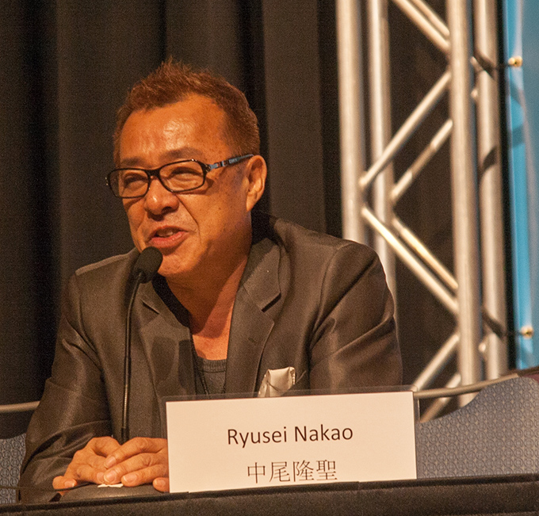

The Legendary Super Saiyan Broly is played by 'Bin Shimada'(Japanese) and 'Vic Mignogna'(English).
Goku is played by 'Masako Nozawa'(Japanese) and 'Sean Schemmel'(English).
Then Vegeta is played by 'Ryo Horikawa'(Japanese) and 'Christopher Sabat'(English).
Frieza is played by'Ryusei Nakao'(Japanese) and 'Christopjer Ayres'(English).
